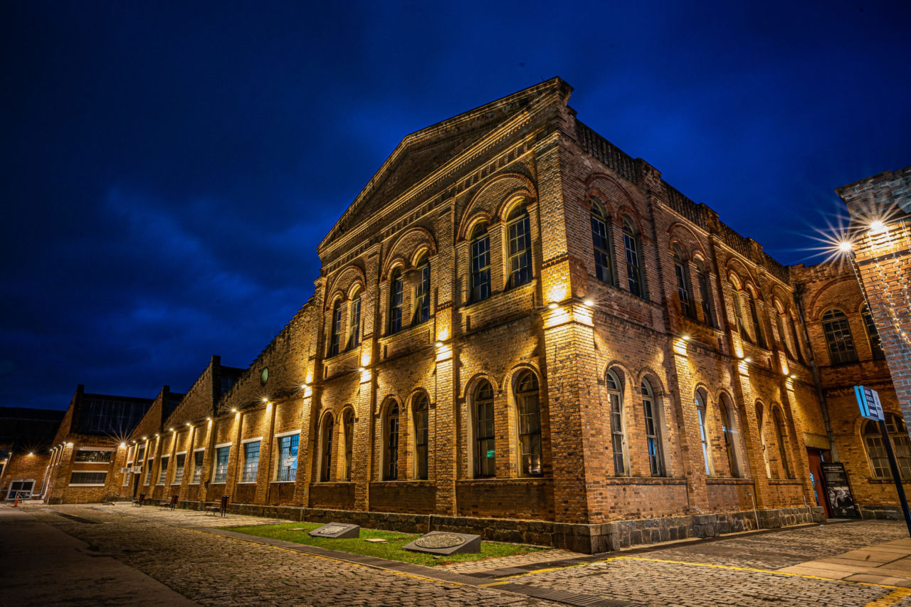
Rota do Centro Histórico
Jundiaí guarda em suas ruas e construções marcas de diferentes períodos da sua história. Nesta rota, você pode conhecer alguns dos principais pontos históricos e culturais da cidade.
LUGARES PARA CONHECER
Conheça alguns dos principais pontos históricos e culturais de Jundiaí.

Catedral Nossa Senhora do Desterro
Um dos principais símbolos históricos e religiosos de Jundiaí, localizado no centro da cidade.
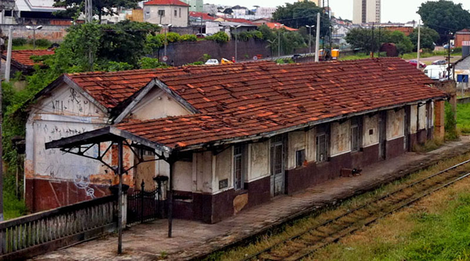
Estação Central
Construída pela Companhia Paulista de Estradas de Ferro, a estação faz parte da história ferroviária de Jundiaí.
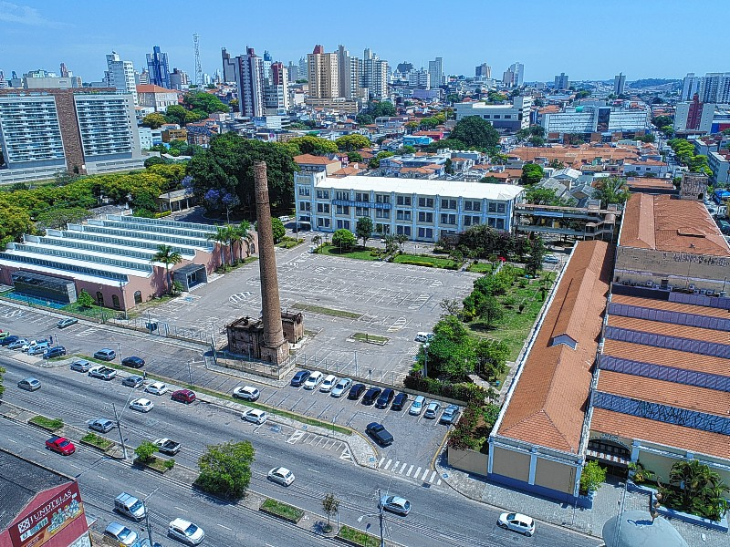
Fábrica Argos
Antiga indústria de destaque em Jundiaí, atualmente abriga espaços municipais de educação e cultura.
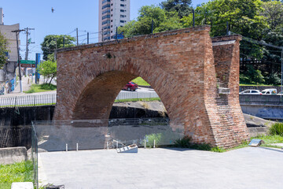
Ponte Torta
Um dos elementos históricos de Jundiaí, localizado na região próxima ao antigo complexo ferroviário.
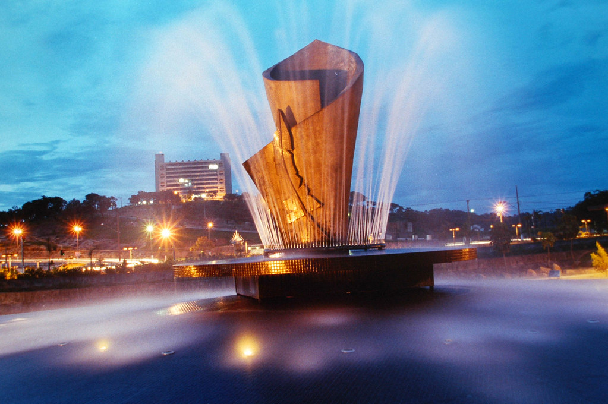
Praça da Cultura
Praça da Cultura: um espaço revitalizado às margens do Rio Jundiaí, com jardins, ponte de pedestres e a icônica escultura em forma de livro, de Semíramis Mojola.

Teatro Polytheama
Um dos mais tradicionais símbolos culturais de Jundiaí, que preserva sua história e arquitetura enquanto recebe diferentes manifestações artísticas.

Jardins do Solar do Barão
Um espaço agradável para passear, explorar a natureza e aproveitar momentos em família.
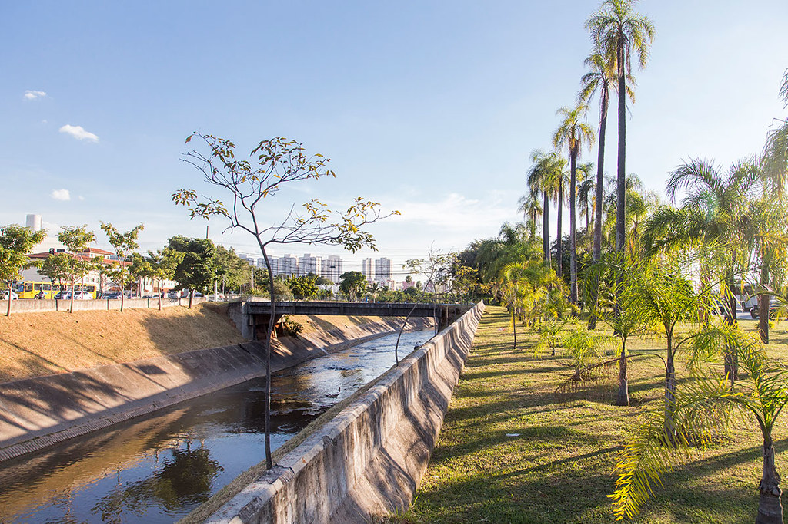
Rio Jundiaí
O rio que deu nome à cidade contorna a região do centro histórico e possui grande importância para a história de Jundiaí.
ONDE COMER
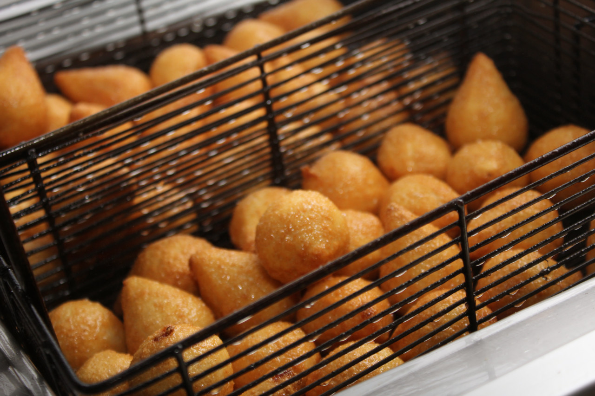
A Casa do Salgado
Uma referência em salgados em Jundiaí, com opções fritas, assadas, congeladas e a famosa coxinha maçaricada.
R. Dr. Emile Pilon, 44 - Vila Arens, Jundiaí - SP
Conheça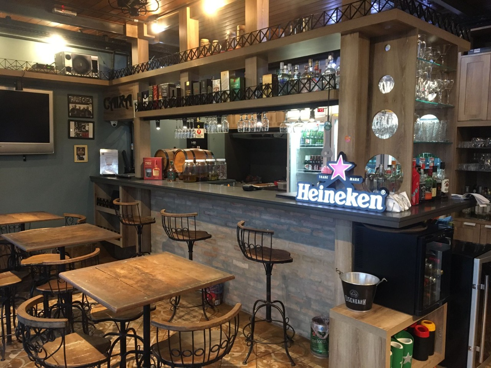
Casa Maneco
Famoso por suas porções, massas artesanais e assados. Outro significado comum para a expressão "maneco" no Brasil é o freio de mão.
Rua Dr. José Roberto Basile Bonito, 50 – Centro – Mercadão da Ferroviários
Conheça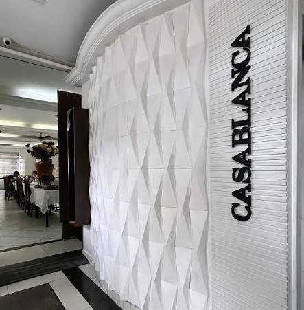
Casablanca Restaurante
Um dos estabelecimentos gastronômicos mais tradicionais de Jundiaí, com mais de 34 anos de história, famoso por servir comida caseira brasileira.
Rua Senador Fonseca, 638 - Centro
Conheça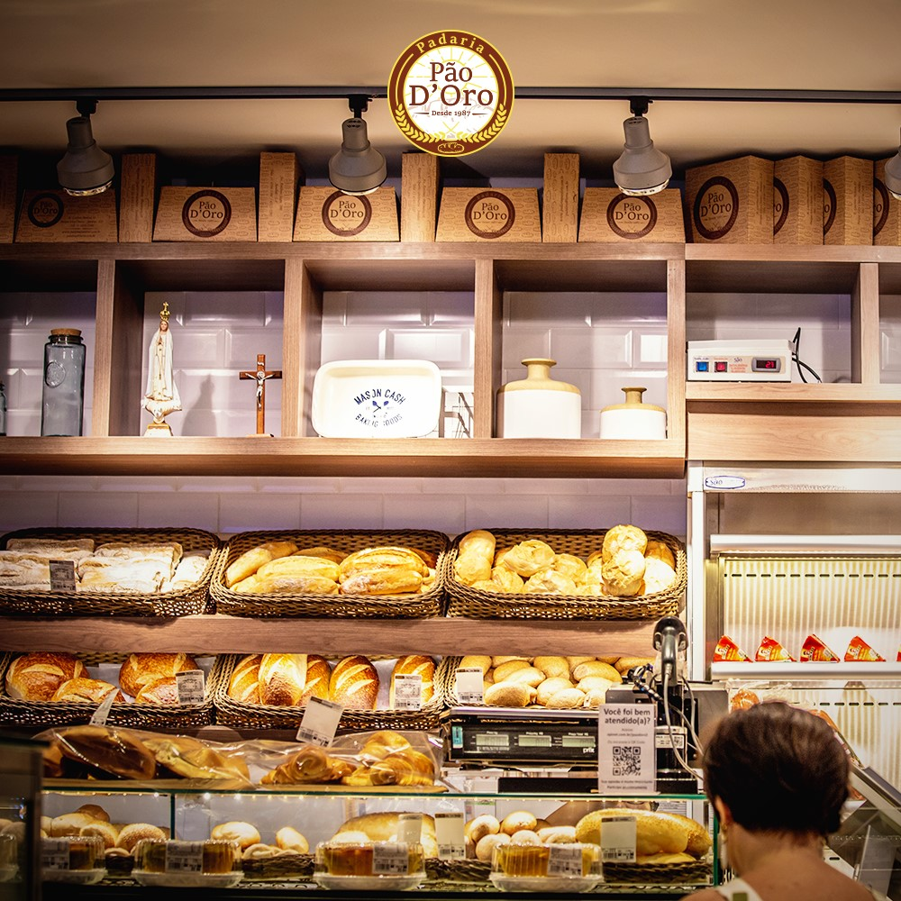
Padaria Pão D’oro
Uma padaria cheia de sabor com bolos, doces, pães, sanduíches, pratos quentes e pizzas preparados com carinho, além de um delicioso café da manhã.
Av. Antônio Segre, 700 - Ponte de Campinas
Conheça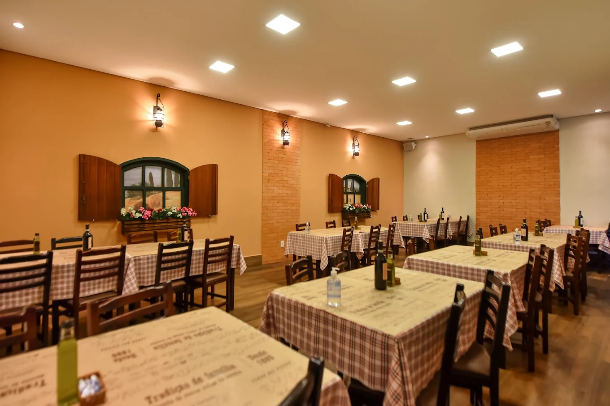
Villa Brunholi
Gastronomia italiana em um ambiente agradável para toda a família.
Av. Humberto Cereser, 5900 - Jardim Caxambu, Jundiaí - SP, 13218-711
Conheça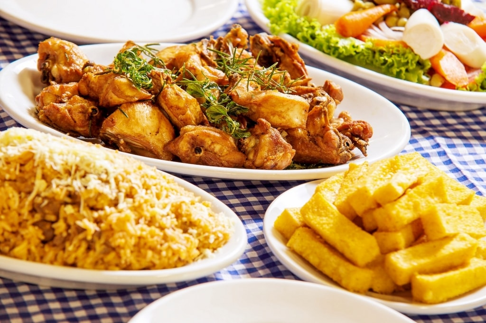
Restaurante Spiandorello
Uma opção de gastronomia italiana para aproveitar durante o passeio.
Av. Humberto Cereser, 6245 - Jardim Caxambu, Jundiaí - SP, 13201-801
ConheçaMAPA DO CENTRO HISTÓRICO
Explore os principais pontos da Rota do Centro Histórico de Jundiaí.
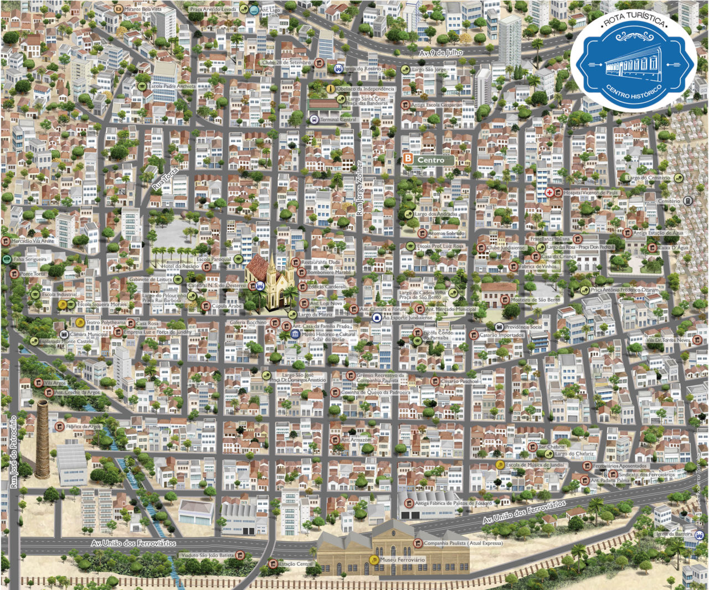